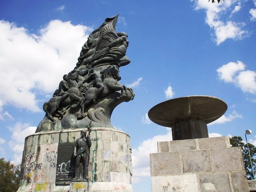

El Monumento a la Victoria (5 de mayo) fue hecha por el escultor y pintor mexicano Ernesto Tamariz. Recibe su nombre debido a que aquí el ejercito mexicano libró una poderosa batalla contra el ejercito francés, durante la Segunda Intervención Francesa el 5 de mayo de 1862.
Puebla fue un punto clave para la historia del país, por lo que este museo interactivo revive de forma didáctica la batalla del 5 de Mayo de 1862 en la zona de Los Fuertes, el mismo escenario donde se desarrollaron estos hechos.
El interactivo narra las acciones militares y contiene las biografías de héroes nacionales como Ignacio Zaragoza, a través de pantallas táctiles, proyecciones en 3-D y contenidos interactivos descargables en dispositivos.

Aplicación Seis
Gabriela Rosales Morales
 1
1